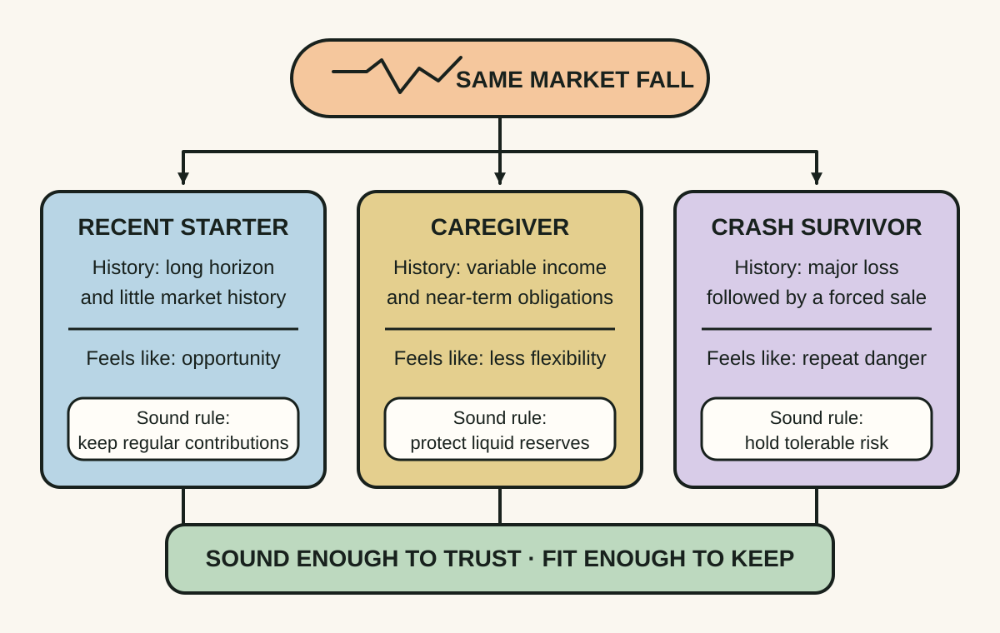
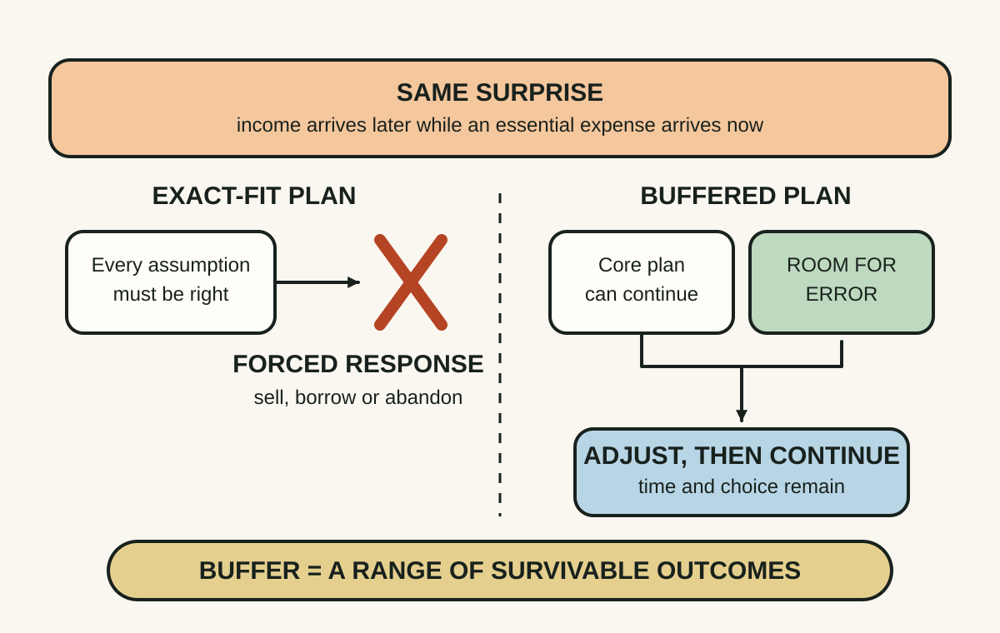
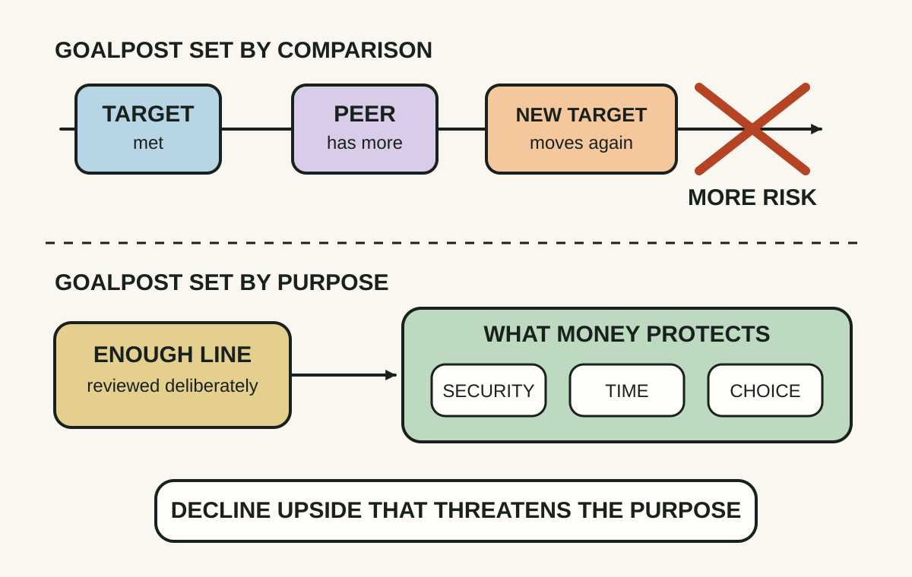

Daily lesson ·
The Psychology of Money
Build a financial life you can actually sustain by respecting personal context, leaving room for error and deciding what enough means before risk decides for you.
Idea 1
A plan must fit the person living it #
The idea
Housel argues that people make money decisions through the narrow slice of history they have personally experienced. Inflation, job security, market crashes, family habits and luck shape what feels safe or reckless, so two informed people can interpret the same choice differently without either being irrational.
His practical distinction is between being coldly rational on paper and being reasonable enough to persist in real life. A mathematically attractive plan fails if fear, regret or family circumstances make it impossible to follow when conditions become uncomfortable.

Why it matters
Copying another person's portfolio, savings target or appetite for uncertainty can import assumptions that do not fit your income stability, responsibilities, time horizon or ability to sleep. Fit supports consistency.
Apply it today
Choose one current money rule, such as a savings rate, investment mix or debt-payment pace. Write the life assumption it depends on.
Ask whether you could still follow it during a bad month. If not, change the rule or add a guardrail before judging yourself for lacking discipline.
Caveat or failure mode
Personal fit does not make every comforting choice sound. Affordability, fees, diversification, tax, debt costs and fraud risk still impose external constraints; use reasonableness to make a sound plan sustainable, not to excuse an unsafe one.
Idea 2
Room for error keeps the plan alive #
The idea
Housel argues that uncertainty should be built into a financial plan rather than treated as a forecast failure. Returns, expenses, income and timing will differ from expectations, so a plan that requires every assumption to be right is fragile even when its central forecast is sensible.
Room for error is not simply avoiding risk. It is keeping enough slack—in cash, savings rate, time, debt load or expectations—to endure a surprise without being forced to abandon the long-term plan.

Why it matters
Unexpected repairs, caring duties, job changes or market falls often arrive together with poor timing. Liquidity and conservative assumptions can prevent distress borrowing or forced selling when choices are narrowest.
Apply it today
Pick one financial assumption you rely on: monthly surplus, bonus, investment return, expense level or completion date.
Write a smaller or later outcome that would still leave the plan workable. If none exists, identify one buffer you can begin building.
Caveat or failure mode
Every buffer has an opportunity cost, and no reserve removes all risk. The appropriate margin depends on obligations, access to credit, insurance, income stability and time horizon; a universal cash target can be too little for one household and unnecessarily costly for another.
Idea 3
Define enough before the goalpost moves #
The idea
Housel argues that social comparison can make financial success an unwinnable game: someone will always have more, and each gain can reset expectations instead of creating satisfaction. Without a stopping rule, the pursuit of more can invite risks that endanger what already matters.
Enough does not mean rejecting growth or ambition. It means recognising when an additional gain is not worth the new chance of losing security, integrity, time, health or relationships.

Why it matters
A raise, investment gain or bigger target can quietly become a new baseline. Naming enough helps distinguish a valuable opportunity from a status contest whose downside reaches the parts of life money was supposed to support.
Apply it today
Finish: Money is doing enough for me when it reliably protects ___ and gives me more choice over ___.
Then write one risk you will not take merely to make the number larger. Keep the statement where the next tempting decision will occur.
Caveat or failure mode
Enough is not a fixed number for every season. Dependants, housing, health and prices change, and people facing scarcity may need more rather than a philosophical stopping rule. Revisit the definition deliberately without letting comparison revise it every week.
Retrieval practice · 6 questions
Learning check
Answer all 6 before checking. Your first attempt is saved only in this browser, and each explanation appears after you check your answers. A 3-question review can appear on the homepage from tomorrow.
6 questions not yet answered.
Today's experiment · 10 minutes
Write a three-line financial operating rule
- Write one financial rule that fits your real behaviour, not an ideal version of you.
- Name one assumption that could fail and one buffer that would keep the plan alive.
- Define what enough protects and one risk you will not take merely to chase more.
- Read the three lines together and revise any pair that contradicts each other.
Observable result: You finish with three visible guardrails: a sustainable rule, a survival margin and a stopping boundary.
Retrieval practice
Spaced recall
- From Software Engineering at Google: when does preserving optionality become speculative over-engineering rather than resilience?
- From Thinking in Systems: what delayed consequence could turn comparison-driven risk-taking into a reinforcing loop?
Verification
Source notes
These links support the attributed claims and edition details; applications and extensions are labelled in the lesson.
One-sentence takeaway